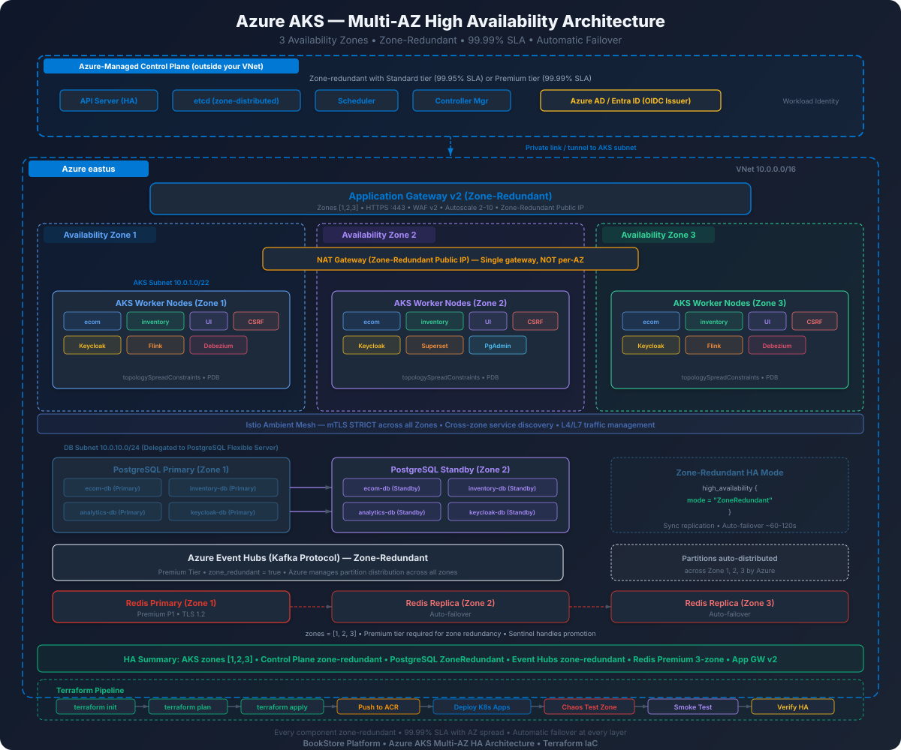

Zone-redundant architecture for the BookStore Platform with complete Terraform code
Azure regions that support Availability Zones provide three physically separated datacenter groups (Zone 1, Zone 2, Zone 3). Each zone has independent power, cooling, and networking. By distributing workloads across all three zones, we eliminate any single zone as a point of failure.

Azure Region (e.g. East US 2)
┌──────────────────────────────────────────────────────────────────────┐
│ │
│ Application Gateway v2 (zone-redundant: 1, 2, 3) │
│ │ │
│ ┌─────────┴──────────────────────────────────────────────┐ │
│ │ VNet 10.0.0.0/16 │ │
│ │ │ │
│ │ ┌──────────────┐ ┌──────────────┐ ┌──────────────┐ │ │
│ │ │ Zone 1 │ │ Zone 2 │ │ Zone 3 │ │ │
│ │ │ │ │ │ │ │ │ │
│ │ │ AKS Node │ │ AKS Node │ │ AKS Node │ │ │
│ │ │ ecom-svc │ │ inven-svc │ │ ui-svc │ │ │
│ │ │ csrf-svc │ │ ecom-svc │ │ ecom-svc │ │ │
│ │ │ keycloak │ │ csrf-svc │ │ inven-svc │ │ │
│ │ │ │ │ keycloak │ │ csrf-svc │ │ │
│ │ │ PG Primary │ │ PG Standby │ │ │ │ │
│ │ │ ecom-db │ │ ecom-db │ │ │ │ │
│ │ │ inventory-db│ │ inventory-db│ │ │ │ │
│ │ │ analytics-db│ │ analytics-db│ │ │ │ │
│ │ │ keycloak-db │ │ keycloak-db │ │ │ │ │
│ │ │ │ │ │ │ │ │ │
│ │ │ Redis Primary│ │ Redis Replica│ │ Redis Replica│ │ │
│ │ └──────────────┘ └──────────────┘ └──────────────┘ │ │
│ │ │ │
│ │ Event Hubs (zone-redundant, managed by Azure) │ │
│ │ NAT Gateway (zone-redundant public IP) │ │
│ └────────────────────────────────────────────────────────┘ │
└──────────────────────────────────────────────────────────────────────┘| Component | SPOF in Single-AZ? | Multi-AZ Mitigation |
|---|---|---|
| AKS Nodes | Yes — all pods in one zone | Nodes spread across zones 1, 2, 3; topology constraints |
| PostgreSQL | Yes — single instance | Zone-redundant HA: primary in zone 1, standby in zone 2 |
| Event Hubs | No — Azure manages internally | Zone-redundant replication (3 copies across zones) |
| Redis | Yes — Basic/Standard single node | Premium tier with replicas in zones 1, 2, 3 |
| App Gateway | Yes — if zone-pinned | v2 SKU with zones = [1, 2, 3] |
| NAT Gateway | Yes — if zone-pinned | Zone-redundant public IP + NAT Gateway |
| AKS Control Plane | No — Azure manages | Azure SLA: 99.95% (single) vs 99.99% (with AZ) |
Azure resources fall into two categories for availability zone support:
| Category | Behavior | Examples |
|---|---|---|
| Zone-Redundant | Azure automatically replicates across zones. You specify zones = [1,2,3] and Azure handles distribution. | App Gateway v2, Event Hubs, AKS node pools, Public IP (Standard SKU) |
| Zone-Pinned (Zonal) | You place a specific instance in a specific zone. You manually distribute across zones. | PostgreSQL Flexible Server primary/standby, individual VMs |
| Configuration | AKS SLA | Downtime / Year | Cost Impact |
|---|---|---|---|
| Free tier (no SLA) | N/A | N/A | $0 |
| Standard tier, single zone | 99.95% | ~4.38 hours | Base price |
| Standard tier, multi-AZ | 99.99% | ~52.6 minutes | Same base price |
Azure VNets inherently span all availability zones. The networking configuration focuses on proper subnet sizing for Azure CNI, service delegation for PostgreSQL, and zone-redundant egress via NAT Gateway.
# variables.tf
variable "resource_group_name" {
description = "Name of the Azure resource group"
type = string
default = "rg-bookstore-prod"
}
variable "location" {
description = "Azure region with 3 AZ support"
type = string
default = "eastus2"
}
variable "vnet_address_space" {
description = "VNet CIDR block"
type = string
default = "10.0.0.0/16"
}
variable "aks_subnet_cidr" {
description = "AKS subnet — /22 for Azure CNI (1022 IPs for pods + nodes)"
type = string
default = "10.0.0.0/22"
}
variable "db_subnet_cidr" {
description = "PostgreSQL Flexible Server delegated subnet"
type = string
default = "10.0.4.0/24"
}
variable "appgw_subnet_cidr" {
description = "Application Gateway dedicated subnet"
type = string
default = "10.0.5.0/24"
}
variable "redis_subnet_cidr" {
description = "Redis private endpoint subnet"
type = string
default = "10.0.6.0/24"
}
variable "environment" {
description = "Environment tag"
type = string
default = "production"
}
variable "zones" {
description = "Availability zones to use"
type = list(string)
default = ["1", "2", "3"]
}# network.tf — VNet spanning all 3 zones (Azure VNets are zone-agnostic)
resource "azurerm_resource_group" "main" {
name = var.resource_group_name
location = var.location
tags = {
Environment = var.environment
Project = "bookstore"
ManagedBy = "terraform"
}
}
# ── VNet ─────────────────────────────────────────────────────────
# Azure VNets are NOT zone-scoped. A single VNet spans all AZs.
# Zone affinity is configured per-resource, not per-subnet.
resource "azurerm_virtual_network" "main" {
name = "vnet-bookstore-prod"
resource_group_name = azurerm_resource_group.main.name
location = azurerm_resource_group.main.location
address_space = [var.vnet_address_space]
tags = azurerm_resource_group.main.tags
}
# ── AKS Subnet (/22 = 1022 usable IPs) ──────────────────────────
# Azure CNI assigns pod IPs from this subnet. Each node consumes
# 1 IP + up to 30 pod IPs (default max_pods). With 9 max nodes:
# 9 * 31 = 279 IPs minimum. /22 gives ample headroom.
resource "azurerm_subnet" "aks" {
name = "snet-aks"
resource_group_name = azurerm_resource_group.main.name
virtual_network_name = azurerm_virtual_network.main.name
address_prefixes = [var.aks_subnet_cidr]
}
# ── Database Subnet (delegated to PostgreSQL Flexible Server) ───
# Delegation grants Azure the right to inject PG Flexible Server
# NICs into this subnet. Required for VNet-integrated PG.
resource "azurerm_subnet" "database" {
name = "snet-database"
resource_group_name = azurerm_resource_group.main.name
virtual_network_name = azurerm_virtual_network.main.name
address_prefixes = [var.db_subnet_cidr]
delegation {
name = "pg-flexible-delegation"
service_delegation {
name = "Microsoft.DBforPostgreSQL/flexibleServers"
actions = [
"Microsoft.Network/virtualNetworks/subnets/join/action"
]
}
}
}
# ── Application Gateway Subnet ──────────────────────────────────
# App Gateway requires its own dedicated subnet. No other resources
# may be deployed here.
resource "azurerm_subnet" "appgw" {
name = "snet-appgateway"
resource_group_name = azurerm_resource_group.main.name
virtual_network_name = azurerm_virtual_network.main.name
address_prefixes = [var.appgw_subnet_cidr]
}
# ── Redis Private Endpoint Subnet ───────────────────────────────
resource "azurerm_subnet" "redis" {
name = "snet-redis"
resource_group_name = azurerm_resource_group.main.name
virtual_network_name = azurerm_virtual_network.main.name
address_prefixes = [var.redis_subnet_cidr]
}
# ── NAT Gateway (zone-redundant egress) ─────────────────────────
# Zone-redundant public IP ensures outbound traffic survives any
# single zone failure. All AKS nodes use this for egress.
resource "azurerm_public_ip" "nat" {
name = "pip-nat-bookstore"
resource_group_name = azurerm_resource_group.main.name
location = azurerm_resource_group.main.location
allocation_method = "Static"
sku = "Standard"
zones = var.zones # Zone-redundant
tags = azurerm_resource_group.main.tags
}
resource "azurerm_nat_gateway" "main" {
name = "natgw-bookstore"
resource_group_name = azurerm_resource_group.main.name
location = azurerm_resource_group.main.location
sku_name = "Standard"
idle_timeout_in_minutes = 10
tags = azurerm_resource_group.main.tags
}
resource "azurerm_nat_gateway_public_ip_association" "main" {
nat_gateway_id = azurerm_nat_gateway.main.id
public_ip_address_id = azurerm_public_ip.nat.id
}
# Associate NAT Gateway with AKS subnet for outbound connectivity
resource "azurerm_subnet_nat_gateway_association" "aks" {
subnet_id = azurerm_subnet.aks.id
nat_gateway_id = azurerm_nat_gateway.main.id
}# nsg.tf — NSGs per subnet for defense-in-depth
# ── AKS Subnet NSG ──────────────────────────────────────────────
resource "azurerm_network_security_group" "aks" {
name = "nsg-aks"
resource_group_name = azurerm_resource_group.main.name
location = azurerm_resource_group.main.location
# Allow App Gateway to reach AKS (Istio ingress port)
security_rule {
name = "AllowAppGateway"
priority = 100
direction = "Inbound"
access = "Allow"
protocol = "Tcp"
source_port_range = "*"
destination_port_range = "8443"
source_address_prefix = var.appgw_subnet_cidr
destination_address_prefix = var.aks_subnet_cidr
}
# Allow Azure Load Balancer health probes
security_rule {
name = "AllowAzureLB"
priority = 110
direction = "Inbound"
access = "Allow"
protocol = "*"
source_port_range = "*"
destination_port_range = "*"
source_address_prefix = "AzureLoadBalancer"
destination_address_prefix = "*"
}
# Allow intra-VNet traffic (pod-to-pod, pod-to-DB)
security_rule {
name = "AllowVNetInbound"
priority = 200
direction = "Inbound"
access = "Allow"
protocol = "*"
source_port_range = "*"
destination_port_range = "*"
source_address_prefix = "VirtualNetwork"
destination_address_prefix = "VirtualNetwork"
}
# Deny all other inbound
security_rule {
name = "DenyAllInbound"
priority = 4096
direction = "Inbound"
access = "Deny"
protocol = "*"
source_port_range = "*"
destination_port_range = "*"
source_address_prefix = "*"
destination_address_prefix = "*"
}
tags = azurerm_resource_group.main.tags
}
resource "azurerm_subnet_network_security_group_association" "aks" {
subnet_id = azurerm_subnet.aks.id
network_security_group_id = azurerm_network_security_group.aks.id
}
# ── Database Subnet NSG ─────────────────────────────────────────
resource "azurerm_network_security_group" "database" {
name = "nsg-database"
resource_group_name = azurerm_resource_group.main.name
location = azurerm_resource_group.main.location
# Only allow PostgreSQL port from AKS subnet
security_rule {
name = "AllowPostgresFromAKS"
priority = 100
direction = "Inbound"
access = "Allow"
protocol = "Tcp"
source_port_range = "*"
destination_port_range = "5432"
source_address_prefix = var.aks_subnet_cidr
destination_address_prefix = var.db_subnet_cidr
}
# Allow PG replication between zones (intra-subnet)
security_rule {
name = "AllowPGReplication"
priority = 110
direction = "Inbound"
access = "Allow"
protocol = "Tcp"
source_port_range = "*"
destination_port_range = "5432"
source_address_prefix = var.db_subnet_cidr
destination_address_prefix = var.db_subnet_cidr
}
security_rule {
name = "DenyAllInbound"
priority = 4096
direction = "Inbound"
access = "Deny"
protocol = "*"
source_port_range = "*"
destination_port_range = "*"
source_address_prefix = "*"
destination_address_prefix = "*"
}
tags = azurerm_resource_group.main.tags
}
resource "azurerm_subnet_network_security_group_association" "database" {
subnet_id = azurerm_subnet.database.id
network_security_group_id = azurerm_network_security_group.database.id
}
# ── App Gateway Subnet NSG ──────────────────────────────────────
resource "azurerm_network_security_group" "appgw" {
name = "nsg-appgateway"
resource_group_name = azurerm_resource_group.main.name
location = azurerm_resource_group.main.location
# Allow HTTPS from internet
security_rule {
name = "AllowHTTPS"
priority = 100
direction = "Inbound"
access = "Allow"
protocol = "Tcp"
source_port_range = "*"
destination_port_range = "443"
source_address_prefix = "Internet"
destination_address_prefix = "*"
}
# Allow HTTP for redirect to HTTPS
security_rule {
name = "AllowHTTP"
priority = 110
direction = "Inbound"
access = "Allow"
protocol = "Tcp"
source_port_range = "*"
destination_port_range = "80"
source_address_prefix = "Internet"
destination_address_prefix = "*"
}
# Required: App Gateway v2 management traffic (65200-65535)
security_rule {
name = "AllowGatewayManager"
priority = 120
direction = "Inbound"
access = "Allow"
protocol = "Tcp"
source_port_range = "*"
destination_port_range = "65200-65535"
source_address_prefix = "GatewayManager"
destination_address_prefix = "*"
}
security_rule {
name = "DenyAllInbound"
priority = 4096
direction = "Inbound"
access = "Deny"
protocol = "*"
source_port_range = "*"
destination_port_range = "*"
source_address_prefix = "*"
destination_address_prefix = "*"
}
tags = azurerm_resource_group.main.tags
}
resource "azurerm_subnet_network_security_group_association" "appgw" {
subnet_id = azurerm_subnet.appgw.id
network_security_group_id = azurerm_network_security_group.appgw.id
}AKS distributes VM instances across the specified availability zones. When you set zones = ["1", "2", "3"] on a node pool, Azure ensures nodes are spread across all three zones. Combined with Kubernetes topology spread constraints, this guarantees pods survive any single zone failure.
sku_tier = "Standard"), Azure distributes the control plane across multiple Availability Zones automatically, providing a 99.95% SLA.private_cluster_enabled = true) from the control plane to your AKS subnet. All kubelet and API Server traffic flows through this tunnel — never the public internet when private cluster is enabled.# aks.tf — AKS cluster with zone-redundant node pools
resource "azurerm_kubernetes_cluster" "main" {
name = "aks-bookstore-prod"
resource_group_name = azurerm_resource_group.main.name
location = azurerm_resource_group.main.location
dns_prefix = "bookstore-prod"
kubernetes_version = "1.30"
# Standard tier required for 99.95%+ SLA
# With AZ-spread node pools, this becomes 99.99%
sku_tier = "Standard"
# ── System Node Pool ─────────────────────────────────────────
# Runs kube-system pods (CoreDNS, metrics-server, etc.)
# Spread across all 3 zones with min 2 nodes for HA.
# max_count=3 ensures one node per zone during scale-up.
default_node_pool {
name = "system"
vm_size = "Standard_D4s_v5"
zones = ["1", "2", "3"]
min_count = 2
max_count = 3
auto_scaling_enabled = true
os_disk_size_gb = 128
os_disk_type = "Managed"
vnet_subnet_id = azurerm_subnet.aks.id
max_pods = 30
# zone_balancing ensures Azure tries to keep node counts
# equal across zones during scale operations
node_labels = {
"nodepool" = "system"
}
upgrade_settings {
# max_surge = 1 means during upgrades, Azure creates
# 1 extra node per zone before draining old ones.
# This prevents capacity loss during rolling upgrades.
max_surge = "1"
}
}
# Azure CNI for direct pod IP assignment from VNet subnet
network_profile {
network_plugin = "azure"
network_policy = "azure"
service_cidr = "10.1.0.0/16"
dns_service_ip = "10.1.0.10"
load_balancer_sku = "standard"
load_balancer_profile {
managed_outbound_ip_count = 0 # Using NAT Gateway instead
}
}
# Managed identity (no service principal credentials to rotate)
identity {
type = "SystemAssigned"
}
# Azure Monitor integration for HA alerting
oms_agent {
log_analytics_workspace_id = azurerm_log_analytics_workspace.main.id
}
# Auto-upgrade patch versions (security fixes)
automatic_upgrade_channel = "patch"
# Maintenance window — avoid upgrades during business hours
maintenance_window {
allowed {
day = "Sunday"
hours = [2, 3, 4]
}
}
tags = azurerm_resource_group.main.tags
}
# ── Application Node Pool ──────────────────────────────────────
# Runs all BookStore workloads: ecom, inventory, UI, CSRF, Keycloak.
# min_count=3 guarantees at least 1 node per zone at all times.
# max_count=9 allows 3 nodes per zone during peak load.
resource "azurerm_kubernetes_cluster_node_pool" "app" {
name = "app"
kubernetes_cluster_id = azurerm_kubernetes_cluster.main.id
vm_size = "Standard_D4s_v5"
zones = ["1", "2", "3"]
min_count = 3
max_count = 9
auto_scaling_enabled = true
os_disk_size_gb = 128
os_disk_type = "Managed"
vnet_subnet_id = azurerm_subnet.aks.id
max_pods = 30
node_labels = {
"nodepool" = "app"
}
node_taints = []
upgrade_settings {
max_surge = "1"
}
tags = azurerm_resource_group.main.tags
}
# ── Log Analytics Workspace (for AKS monitoring) ───────────────
resource "azurerm_log_analytics_workspace" "main" {
name = "law-bookstore-prod"
resource_group_name = azurerm_resource_group.main.name
location = azurerm_resource_group.main.location
sku = "PerGB2018"
retention_in_days = 30
tags = azurerm_resource_group.main.tags
}Topology spread constraints tell the Kubernetes scheduler to distribute pods evenly across zones. Without these, the scheduler might place all replicas in a single zone.
# k8s/topology-spread.yaml
# Applied to every Deployment via Kustomize strategic merge patch
apiVersion: apps/v1
kind: Deployment
metadata:
name: ecom-service
namespace: ecom
spec:
template:
spec:
topologySpreadConstraints:
# maxSkew: 1 means the difference in pod count between
# any two zones must not exceed 1.
# whenUnsatisfiable: DoNotSchedule prevents the scheduler
# from violating this constraint (hard requirement).
- maxSkew: 1
topologyKey: topology.kubernetes.io/zone
whenUnsatisfiable: DoNotSchedule
labelSelector:
matchLabels:
app: ecom-service
# Also spread across nodes within a zone for extra resilience
- maxSkew: 1
topologyKey: kubernetes.io/hostname
whenUnsatisfiable: ScheduleAnyway
labelSelector:
matchLabels:
app: ecom-service
# Prefer app node pool (but don't require it)
affinity:
nodeAffinity:
preferredDuringSchedulingIgnoredDuringExecution:
- weight: 100
preference:
matchExpressions:
- key: nodepool
operator: In
values: ["app"]PDBs prevent Kubernetes from voluntarily evicting too many pods at once (during node upgrades, scaling down, etc.).
# k8s/pdb.yaml — one PDB per service
# ecom-service: always keep at least 1 pod running
apiVersion: policy/v1
kind: PodDisruptionBudget
metadata:
name: ecom-service-pdb
namespace: ecom
spec:
minAvailable: 1
selector:
matchLabels:
app: ecom-service
---
# inventory-service: always keep at least 1 pod running
apiVersion: policy/v1
kind: PodDisruptionBudget
metadata:
name: inventory-service-pdb
namespace: inventory
spec:
minAvailable: 1
selector:
matchLabels:
app: inventory-service
---
# ui-service: always keep at least 1 pod running
apiVersion: policy/v1
kind: PodDisruptionBudget
metadata:
name: ui-service-pdb
namespace: ecom
spec:
minAvailable: 1
selector:
matchLabels:
app: ui-service
---
# csrf-service: always keep at least 1 pod running
apiVersion: policy/v1
kind: PodDisruptionBudget
metadata:
name: csrf-service-pdb
namespace: infra
spec:
minAvailable: 1
selector:
matchLabels:
app: csrf-service
---
# keycloak: always keep at least 1 pod running
apiVersion: policy/v1
kind: PodDisruptionBudget
metadata:
name: keycloak-pdb
namespace: identity
spec:
minAvailable: 1
selector:
matchLabels:
app: keycloak# k8s/hpa.yaml — minReplicas >= 2 for all services
apiVersion: autoscaling/v2
kind: HorizontalPodAutoscaler
metadata:
name: ecom-service-hpa
namespace: ecom
spec:
scaleTargetRef:
apiVersion: apps/v1
kind: Deployment
name: ecom-service
# minReplicas=2 ensures at least 2 pods in different zones.
# A single zone failure still leaves 1+ pod serving traffic.
minReplicas: 2
maxReplicas: 6
metrics:
- type: Resource
resource:
name: cpu
target:
type: Utilization
averageUtilization: 70
- type: Resource
resource:
name: memory
target:
type: Utilization
averageUtilization: 80
behavior:
scaleDown:
stabilizationWindowSeconds: 300
policies:
- type: Pods
value: 1
periodSeconds: 60
scaleUp:
stabilizationWindowSeconds: 30
policies:
- type: Pods
value: 2
periodSeconds: 60
---
apiVersion: autoscaling/v2
kind: HorizontalPodAutoscaler
metadata:
name: inventory-service-hpa
namespace: inventory
spec:
scaleTargetRef:
apiVersion: apps/v1
kind: Deployment
name: inventory-service
minReplicas: 2
maxReplicas: 4
metrics:
- type: Resource
resource:
name: cpu
target:
type: Utilization
averageUtilization: 70
behavior:
scaleDown:
stabilizationWindowSeconds: 300
policies:
- type: Pods
value: 1
periodSeconds: 60
---
apiVersion: autoscaling/v2
kind: HorizontalPodAutoscaler
metadata:
name: ui-service-hpa
namespace: ecom
spec:
scaleTargetRef:
apiVersion: apps/v1
kind: Deployment
name: ui-service
minReplicas: 2
maxReplicas: 6
metrics:
- type: Resource
resource:
name: cpu
target:
type: Utilization
averageUtilization: 75
---
apiVersion: autoscaling/v2
kind: HorizontalPodAutoscaler
metadata:
name: csrf-service-hpa
namespace: infra
spec:
scaleTargetRef:
apiVersion: apps/v1
kind: Deployment
name: csrf-service
minReplicas: 2
maxReplicas: 4
metrics:
- type: Resource
resource:
name: cpu
target:
type: Utilization
averageUtilization: 70
---
apiVersion: autoscaling/v2
kind: HorizontalPodAutoscaler
metadata:
name: keycloak-hpa
namespace: identity
spec:
scaleTargetRef:
apiVersion: apps/v1
kind: Deployment
name: keycloak
minReplicas: 2
maxReplicas: 4
metrics:
- type: Resource
resource:
name: cpu
target:
type: Utilization
averageUtilization: 75Azure Database for PostgreSQL Flexible Server supports zone-redundant HA with synchronous replication. The primary instance lives in one zone, and a hot standby is maintained in a different zone. On failure, Azure automatically promotes the standby within 60-120 seconds.
# postgresql-dns.tf
# PostgreSQL Flexible Server with VNet integration requires
# a private DNS zone for name resolution.
resource "azurerm_private_dns_zone" "postgres" {
name = "bookstore.postgres.database.azure.com"
resource_group_name = azurerm_resource_group.main.name
tags = azurerm_resource_group.main.tags
}
resource "azurerm_private_dns_zone_virtual_network_link" "postgres" {
name = "postgres-vnet-link"
resource_group_name = azurerm_resource_group.main.name
private_dns_zone_name = azurerm_private_dns_zone.postgres.name
virtual_network_id = azurerm_virtual_network.main.id
registration_enabled = false
}# postgresql.tf — Zone-redundant HA for all 4 databases
#
# How zone-redundant HA works:
# 1. Primary instance placed in zone 1 (zone = "1")
# 2. Standby automatically placed in zone 2 (standby_availability_zone = "2")
# 3. Synchronous replication: every commit is written to BOTH zones
# before being acknowledged to the client (RPO = 0)
# 4. On primary failure, Azure detects via heartbeat (~10s),
# promotes standby (DNS update ~30s), total RTO = 60-120s
# 5. After failover, Azure provisions a new standby in the original zone
# ── E-Commerce Database ─────────────────────────────────────────
resource "azurerm_postgresql_flexible_server" "ecom" {
name = "psql-bookstore-ecom"
resource_group_name = azurerm_resource_group.main.name
location = azurerm_resource_group.main.location
version = "16"
delegated_subnet_id = azurerm_subnet.database.id
private_dns_zone_id = azurerm_private_dns_zone.postgres.id
# General Purpose tier — required for zone-redundant HA
# D4s_v3: 4 vCores, 16 GiB RAM — suitable for production workloads
sku_name = "GP_Standard_D4s_v3"
# Storage: 128 GiB with auto-grow enabled
# Azure automatically increases storage when usage exceeds threshold
storage_mb = 131072
auto_grow_enabled = true
# Primary in Zone 1
zone = "1"
# ── Zone-Redundant HA Configuration ───────────────────────────
# mode = "ZoneRedundant": standby in a DIFFERENT zone than primary
# mode = "SameZone": standby in the SAME zone (cheaper, less resilient)
# Synchronous commit: data is written to both primary and standby
# before the transaction is acknowledged.
high_availability {
mode = "ZoneRedundant"
standby_availability_zone = "2"
}
# Admin credentials from Key Vault
administrator_login = "ecom_admin"
administrator_password = var.ecom_db_password
# Backup: 35-day retention with geo-redundant storage
# Geo-redundant backup replicates to the paired Azure region
backup_retention_days = 35
geo_redundant_backup_enabled = true
tags = azurerm_resource_group.main.tags
depends_on = [azurerm_private_dns_zone_virtual_network_link.postgres]
}
# Server parameters for ecom-db
resource "azurerm_postgresql_flexible_server_configuration" "ecom_wal_level" {
name = "wal_level"
server_id = azurerm_postgresql_flexible_server.ecom.id
value = "logical" # Required for Debezium CDC
}
resource "azurerm_postgresql_flexible_server_configuration" "ecom_max_replication_slots" {
name = "max_replication_slots"
server_id = azurerm_postgresql_flexible_server.ecom.id
value = "10"
}
resource "azurerm_postgresql_flexible_server_configuration" "ecom_max_wal_senders" {
name = "max_wal_senders"
server_id = azurerm_postgresql_flexible_server.ecom.id
value = "10"
}
resource "azurerm_postgresql_flexible_server_database" "ecom" {
name = "ecom"
server_id = azurerm_postgresql_flexible_server.ecom.id
charset = "UTF8"
collation = "en_US.utf8"
}
# ── Inventory Database ──────────────────────────────────────────
resource "azurerm_postgresql_flexible_server" "inventory" {
name = "psql-bookstore-inventory"
resource_group_name = azurerm_resource_group.main.name
location = azurerm_resource_group.main.location
version = "16"
delegated_subnet_id = azurerm_subnet.database.id
private_dns_zone_id = azurerm_private_dns_zone.postgres.id
sku_name = "GP_Standard_D4s_v3"
storage_mb = 131072
auto_grow_enabled = true
zone = "1"
administrator_login = "inventory_admin"
administrator_password = var.inventory_db_password
backup_retention_days = 35
geo_redundant_backup_enabled = true
high_availability {
mode = "ZoneRedundant"
standby_availability_zone = "2"
}
tags = azurerm_resource_group.main.tags
depends_on = [azurerm_private_dns_zone_virtual_network_link.postgres]
}
resource "azurerm_postgresql_flexible_server_configuration" "inventory_wal_level" {
name = "wal_level"
server_id = azurerm_postgresql_flexible_server.inventory.id
value = "logical"
}
resource "azurerm_postgresql_flexible_server_configuration" "inventory_max_replication_slots" {
name = "max_replication_slots"
server_id = azurerm_postgresql_flexible_server.inventory.id
value = "10"
}
resource "azurerm_postgresql_flexible_server_configuration" "inventory_max_wal_senders" {
name = "max_wal_senders"
server_id = azurerm_postgresql_flexible_server.inventory.id
value = "10"
}
resource "azurerm_postgresql_flexible_server_database" "inventory" {
name = "inventory"
server_id = azurerm_postgresql_flexible_server.inventory.id
charset = "UTF8"
collation = "en_US.utf8"
}
# ── Analytics Database ──────────────────────────────────────────
resource "azurerm_postgresql_flexible_server" "analytics" {
name = "psql-bookstore-analytics"
resource_group_name = azurerm_resource_group.main.name
location = azurerm_resource_group.main.location
version = "16"
delegated_subnet_id = azurerm_subnet.database.id
private_dns_zone_id = azurerm_private_dns_zone.postgres.id
sku_name = "GP_Standard_D4s_v3"
storage_mb = 131072
auto_grow_enabled = true
zone = "1"
administrator_login = "analytics_admin"
administrator_password = var.analytics_db_password
backup_retention_days = 35
geo_redundant_backup_enabled = true
high_availability {
mode = "ZoneRedundant"
standby_availability_zone = "2"
}
tags = azurerm_resource_group.main.tags
depends_on = [azurerm_private_dns_zone_virtual_network_link.postgres]
}
resource "azurerm_postgresql_flexible_server_database" "analytics" {
name = "analytics"
server_id = azurerm_postgresql_flexible_server.analytics.id
charset = "UTF8"
collation = "en_US.utf8"
}
# ── Keycloak Database ───────────────────────────────────────────
resource "azurerm_postgresql_flexible_server" "keycloak" {
name = "psql-bookstore-keycloak"
resource_group_name = azurerm_resource_group.main.name
location = azurerm_resource_group.main.location
version = "16"
delegated_subnet_id = azurerm_subnet.database.id
private_dns_zone_id = azurerm_private_dns_zone.postgres.id
sku_name = "GP_Standard_D4s_v3"
storage_mb = 65536
auto_grow_enabled = true
zone = "1"
administrator_login = "keycloak_admin"
administrator_password = var.keycloak_db_password
backup_retention_days = 35
geo_redundant_backup_enabled = true
high_availability {
mode = "ZoneRedundant"
standby_availability_zone = "2"
}
tags = azurerm_resource_group.main.tags
depends_on = [azurerm_private_dns_zone_virtual_network_link.postgres]
}
resource "azurerm_postgresql_flexible_server_database" "keycloak" {
name = "keycloak"
server_id = azurerm_postgresql_flexible_server.keycloak.id
charset = "UTF8"
collation = "en_US.utf8"
}# variables-db.tf — sensitive variables for database passwords
variable "ecom_db_password" {
description = "Password for ecom-db admin user"
type = string
sensitive = true
}
variable "inventory_db_password" {
description = "Password for inventory-db admin user"
type = string
sensitive = true
}
variable "analytics_db_password" {
description = "Password for analytics-db admin user"
type = string
sensitive = true
}
variable "keycloak_db_password" {
description = "Password for keycloak-db admin user"
type = string
sensitive = true
}
# Pass via terraform.tfvars (gitignored) or -var flag:
# terraform apply -var="ecom_db_password=S3cur3P@ss!" ...Azure Event Hubs replaces self-managed Kafka. Event Hubs Premium tier is zone-redundant by default — Azure automatically replicates data across all three availability zones. It also supports the Kafka wire protocol, so Debezium and Flink connect without code changes.
# eventhubs.tf — Zone-redundant Event Hubs with Kafka protocol
resource "azurerm_eventhub_namespace" "main" {
name = "ehns-bookstore-prod"
resource_group_name = azurerm_resource_group.main.name
location = azurerm_resource_group.main.location
# Premium tier: zone-redundant by default (no explicit setting needed)
# Standard tier: set zone_redundant = true explicitly
# Basic tier: NO zone-redundancy support
sku = "Premium"
# Processing Units for Premium tier (1 PU = 1 MB/s ingress, 2 MB/s egress)
# For BookStore workloads, 1 PU is sufficient
capacity = 1
# Zone redundancy is automatic for Premium.
# For Standard tier, you would add:
# zone_redundant = true
# Auto-inflate disabled — Premium uses Processing Units instead
auto_inflate_enabled = false
# Kafka protocol support — allows Debezium and Flink to connect
# using standard Kafka client libraries
kafka_enabled = true
# Network rules — restrict to VNet
network_rulesets {
default_action = "Deny"
trusted_service_access_enabled = true
virtual_network_rule {
subnet_id = azurerm_subnet.aks.id
}
}
# Local authentication disabled — use AAD/managed identity
local_authentication_enabled = false
tags = azurerm_resource_group.main.tags
}
# ── Event Hub (Topic): order.created ────────────────────────────
# Published by ecom-service on checkout.
# 4 partitions: enables parallel consumption by multiple pods.
# 7-day retention: allows replay of events if needed.
resource "azurerm_eventhub" "order_created" {
name = "order.created"
namespace_name = azurerm_eventhub_namespace.main.name
resource_group_name = azurerm_resource_group.main.name
partition_count = 4
message_retention = 7
}
# ── Event Hub (Topic): inventory.updated ────────────────────────
# Published by inventory-service after stock deduction.
resource "azurerm_eventhub" "inventory_updated" {
name = "inventory.updated"
namespace_name = azurerm_eventhub_namespace.main.name
resource_group_name = azurerm_resource_group.main.name
partition_count = 4
message_retention = 7
}
# ── CDC Topics for Debezium ─────────────────────────────────────
# Debezium Server publishes change events from PostgreSQL WAL.
# Each table gets its own Event Hub (topic).
resource "azurerm_eventhub" "cdc_ecom_orders" {
name = "ecom-connector.public.orders"
namespace_name = azurerm_eventhub_namespace.main.name
resource_group_name = azurerm_resource_group.main.name
partition_count = 4
message_retention = 7
}
resource "azurerm_eventhub" "cdc_ecom_order_items" {
name = "ecom-connector.public.order_items"
namespace_name = azurerm_eventhub_namespace.main.name
resource_group_name = azurerm_resource_group.main.name
partition_count = 4
message_retention = 7
}
resource "azurerm_eventhub" "cdc_inventory_stock" {
name = "inventory-connector.public.stock"
namespace_name = azurerm_eventhub_namespace.main.name
resource_group_name = azurerm_resource_group.main.name
partition_count = 4
message_retention = 7
}
# ── Debezium Offset Storage Topics ──────────────────────────────
resource "azurerm_eventhub" "debezium_ecom_offsets" {
name = "debezium.ecom.offsets"
namespace_name = azurerm_eventhub_namespace.main.name
resource_group_name = azurerm_resource_group.main.name
partition_count = 1
message_retention = 7
}
resource "azurerm_eventhub" "debezium_inventory_offsets" {
name = "debezium.inventory.offsets"
namespace_name = azurerm_eventhub_namespace.main.name
resource_group_name = azurerm_resource_group.main.name
partition_count = 1
message_retention = 7
}
# ── Consumer Groups ─────────────────────────────────────────────
# Each consuming service gets its own consumer group for
# independent offset tracking.
resource "azurerm_eventhub_consumer_group" "inventory_order_consumer" {
name = "inventory-service"
namespace_name = azurerm_eventhub_namespace.main.name
eventhub_name = azurerm_eventhub.order_created.name
resource_group_name = azurerm_resource_group.main.name
}
resource "azurerm_eventhub_consumer_group" "flink_orders_consumer" {
name = "flink-sql-pipeline"
namespace_name = azurerm_eventhub_namespace.main.name
eventhub_name = azurerm_eventhub.cdc_ecom_orders.name
resource_group_name = azurerm_resource_group.main.name
}
resource "azurerm_eventhub_consumer_group" "flink_stock_consumer" {
name = "flink-sql-pipeline"
namespace_name = azurerm_eventhub_namespace.main.name
eventhub_name = azurerm_eventhub.cdc_inventory_stock.name
resource_group_name = azurerm_resource_group.main.name
}zone_redundant = true for Standard).
Redis is used for session management, CSRF token storage, and rate limiting. Azure Cache for Redis Premium tier supports zone-redundant replicas — the primary and replicas are distributed across availability zones for automatic failover.
# redis.tf — Zone-redundant Premium Redis
resource "azurerm_redis_cache" "main" {
name = "redis-bookstore-prod"
resource_group_name = azurerm_resource_group.main.name
location = azurerm_resource_group.main.location
# Premium tier is REQUIRED for zone redundancy.
# Basic: single node, no replication, no zones.
# Standard: 1 primary + 1 replica, SAME zone only.
# Premium: 1 primary + N replicas, supports zones [1,2,3].
sku_name = "Premium"
# Family P = Premium. Cache size: P1 = 6GB, P2 = 13GB, etc.
# P1 (6GB) is sufficient for session/CSRF/rate-limit data.
family = "P"
capacity = 1
# ── Zone Redundancy ────────────────────────────────────────────
# Distributes the primary and replicas across zones 1, 2, 3.
# Azure Sentinel monitors health and promotes a replica
# if the primary becomes unreachable.
zones = ["1", "2", "3"]
# Number of replicas (in addition to the primary).
# With zones [1,2,3] and 2 replicas: primary in one zone,
# one replica in each of the other two zones.
replicas_per_primary = 2
# ── Data Persistence ───────────────────────────────────────────
# RDB: periodic snapshots (every 60 seconds if >= 1 key changed)
# AOF: append-only file logs every write operation
# Both together provide maximum durability.
redis_configuration {
rdb_backup_enabled = true
rdb_backup_frequency = 60
rdb_storage_connection_string = azurerm_storage_account.redis_backup.primary_blob_connection_string
aof_backup_enabled = true
aof_storage_connection_string_0 = azurerm_storage_account.redis_backup.primary_blob_connection_string
# Eviction policy — don't evict when memory is full (fail writes instead)
# This prevents silent data loss for CSRF tokens and sessions.
maxmemory_policy = "noeviction"
}
# TLS 1.2 required (non-TLS port disabled)
minimum_tls_version = "1.2"
enable_non_ssl_port = false
public_network_access_enabled = false
tags = azurerm_resource_group.main.tags
}
# ── Storage Account for Redis Backup ────────────────────────────
resource "azurerm_storage_account" "redis_backup" {
name = "stbookstoreredisbak"
resource_group_name = azurerm_resource_group.main.name
location = azurerm_resource_group.main.location
account_tier = "Standard"
account_replication_type = "ZRS" # Zone-Redundant Storage
tags = azurerm_resource_group.main.tags
}
# ── Private Endpoint (VNet integration) ─────────────────────────
# Redis is only accessible from within the VNet via private endpoint.
# No public IP is exposed.
resource "azurerm_private_endpoint" "redis" {
name = "pe-redis-bookstore"
resource_group_name = azurerm_resource_group.main.name
location = azurerm_resource_group.main.location
subnet_id = azurerm_subnet.redis.id
private_service_connection {
name = "redis-privatelink"
private_connection_resource_id = azurerm_redis_cache.main.id
is_manual_connection = false
subresource_names = ["redisCache"]
}
tags = azurerm_resource_group.main.tags
}
# Private DNS zone for Redis private endpoint resolution
resource "azurerm_private_dns_zone" "redis" {
name = "privatelink.redis.cache.windows.net"
resource_group_name = azurerm_resource_group.main.name
tags = azurerm_resource_group.main.tags
}
resource "azurerm_private_dns_zone_virtual_network_link" "redis" {
name = "redis-vnet-link"
resource_group_name = azurerm_resource_group.main.name
private_dns_zone_name = azurerm_private_dns_zone.redis.name
virtual_network_id = azurerm_virtual_network.main.id
}
resource "azurerm_private_dns_a_record" "redis" {
name = azurerm_redis_cache.main.name
zone_name = azurerm_private_dns_zone.redis.name
resource_group_name = azurerm_resource_group.main.name
ttl = 300
records = [azurerm_private_endpoint.redis.private_service_connection[0].private_ip_address]
}Infrastructure-level HA (managed services, zone-redundant node pools) is necessary but not sufficient. Applications must also be designed for HA at the Kubernetes level: probes, graceful shutdown, circuit breaking, and proper resource management.
# k8s/ecom-service/deployment.yaml
apiVersion: apps/v1
kind: Deployment
metadata:
name: ecom-service
namespace: ecom
labels:
app: ecom-service
version: v1
spec:
replicas: 2
selector:
matchLabels:
app: ecom-service
strategy:
type: RollingUpdate
rollingUpdate:
# maxUnavailable: 0 ensures zero downtime during deploys.
# maxSurge: 1 creates 1 new pod before removing an old one.
maxUnavailable: 0
maxSurge: 1
template:
metadata:
labels:
app: ecom-service
version: v1
spec:
# ── Zone Spread ────────────────────────────────────────────
topologySpreadConstraints:
- maxSkew: 1
topologyKey: topology.kubernetes.io/zone
whenUnsatisfiable: DoNotSchedule
labelSelector:
matchLabels:
app: ecom-service
# Prefer app nodepool
affinity:
nodeAffinity:
preferredDuringSchedulingIgnoredDuringExecution:
- weight: 100
preference:
matchExpressions:
- key: nodepool
operator: In
values: ["app"]
containers:
- name: ecom-service
image: bookstoreacr.azurecr.io/ecom-service:latest
ports:
- containerPort: 8080
env:
- name: SPRING_DATASOURCE_URL
valueFrom:
secretKeyRef:
name: ecom-db-credentials
key: jdbc-url
- name: SPRING_DATASOURCE_USERNAME
valueFrom:
secretKeyRef:
name: ecom-db-credentials
key: username
- name: SPRING_DATASOURCE_PASSWORD
valueFrom:
secretKeyRef:
name: ecom-db-credentials
key: password
- name: KEYCLOAK_JWKS_URI
value: "http://keycloak.identity.svc.cluster.local:8080/realms/bookstore/protocol/openid-connect/certs"
- name: KAFKA_BOOTSTRAP_SERVERS
valueFrom:
secretKeyRef:
name: eventhubs-credentials
key: bootstrap-servers
resources:
requests:
cpu: 500m
memory: 768Mi
limits:
cpu: "1"
memory: 1Gi
# ── Readiness Probe ──────────────────────────────────────
# Checks /ecom/actuator/health/readiness.
# Pod is removed from Service endpoints if probe fails.
# This happens within 10s (period) + 3 (failureThreshold) = ~30s.
readinessProbe:
httpGet:
path: /ecom/actuator/health/readiness
port: 8080
initialDelaySeconds: 20
periodSeconds: 10
failureThreshold: 3
successThreshold: 1
# ── Liveness Probe ───────────────────────────────────────
# Restarts the container if it becomes unresponsive.
# Higher threshold than readiness to avoid premature restarts.
livenessProbe:
httpGet:
path: /ecom/actuator/health/liveness
port: 8080
initialDelaySeconds: 30
periodSeconds: 15
failureThreshold: 5
# ── Startup Probe ────────────────────────────────────────
# Gives the JVM 120s to start before liveness kicks in.
# Prevents premature kills during slow cold starts.
startupProbe:
httpGet:
path: /ecom/actuator/health/liveness
port: 8080
initialDelaySeconds: 10
periodSeconds: 5
failureThreshold: 24
# ── Graceful Shutdown ────────────────────────────────────
# preStop sends a sleep to allow Istio sidecar / ztunnel
# to drain existing connections before SIGTERM.
# Spring Boot's server.shutdown=graceful handles the rest.
lifecycle:
preStop:
exec:
command: ["sh", "-c", "sleep 5"]
securityContext:
runAsNonRoot: true
runAsUser: 1000
readOnlyRootFilesystem: true
allowPrivilegeEscalation: false
capabilities:
drop: ["ALL"]
# terminationGracePeriodSeconds must exceed preStop sleep +
# Spring Boot graceful shutdown timeout (default 30s)
terminationGracePeriodSeconds: 45# k8s/inventory-service/deployment.yaml
apiVersion: apps/v1
kind: Deployment
metadata:
name: inventory-service
namespace: inventory
labels:
app: inventory-service
spec:
replicas: 2
selector:
matchLabels:
app: inventory-service
strategy:
type: RollingUpdate
rollingUpdate:
maxUnavailable: 0
maxSurge: 1
template:
metadata:
labels:
app: inventory-service
spec:
topologySpreadConstraints:
- maxSkew: 1
topologyKey: topology.kubernetes.io/zone
whenUnsatisfiable: DoNotSchedule
labelSelector:
matchLabels:
app: inventory-service
containers:
- name: inventory-service
image: bookstoreacr.azurecr.io/inventory-service:latest
ports:
- containerPort: 8000
env:
- name: DATABASE_URL
valueFrom:
secretKeyRef:
name: inventory-db-credentials
key: database-url
- name: KEYCLOAK_JWKS_URI
value: "http://keycloak.identity.svc.cluster.local:8080/realms/bookstore/protocol/openid-connect/certs"
- name: KAFKA_BOOTSTRAP_SERVERS
valueFrom:
secretKeyRef:
name: eventhubs-credentials
key: bootstrap-servers
resources:
requests:
cpu: 250m
memory: 256Mi
limits:
cpu: 500m
memory: 512Mi
readinessProbe:
httpGet:
path: /inven/health
port: 8000
initialDelaySeconds: 5
periodSeconds: 10
failureThreshold: 3
livenessProbe:
httpGet:
path: /inven/health
port: 8000
initialDelaySeconds: 10
periodSeconds: 15
failureThreshold: 5
lifecycle:
preStop:
exec:
command: ["sh", "-c", "sleep 5"]
securityContext:
runAsNonRoot: true
runAsUser: 1000
readOnlyRootFilesystem: true
allowPrivilegeEscalation: false
capabilities:
drop: ["ALL"]
terminationGracePeriodSeconds: 30# k8s/ui-service/deployment.yaml
apiVersion: apps/v1
kind: Deployment
metadata:
name: ui-service
namespace: ecom
spec:
replicas: 2
selector:
matchLabels:
app: ui-service
template:
metadata:
labels:
app: ui-service
spec:
topologySpreadConstraints:
- maxSkew: 1
topologyKey: topology.kubernetes.io/zone
whenUnsatisfiable: DoNotSchedule
labelSelector:
matchLabels:
app: ui-service
containers:
- name: ui-service
image: bookstoreacr.azurecr.io/ui-service:latest
ports:
- containerPort: 80
resources:
requests:
cpu: 100m
memory: 128Mi
limits:
cpu: 250m
memory: 256Mi
readinessProbe:
httpGet:
path: /
port: 80
initialDelaySeconds: 5
periodSeconds: 10
livenessProbe:
httpGet:
path: /
port: 80
initialDelaySeconds: 5
periodSeconds: 15
lifecycle:
preStop:
exec:
command: ["sh", "-c", "sleep 3"]
securityContext:
runAsNonRoot: true
runAsUser: 1000
readOnlyRootFilesystem: true
allowPrivilegeEscalation: false
capabilities:
drop: ["ALL"]
---
# k8s/csrf-service/deployment.yaml
apiVersion: apps/v1
kind: Deployment
metadata:
name: csrf-service
namespace: infra
spec:
replicas: 2
selector:
matchLabels:
app: csrf-service
template:
metadata:
labels:
app: csrf-service
spec:
topologySpreadConstraints:
- maxSkew: 1
topologyKey: topology.kubernetes.io/zone
whenUnsatisfiable: DoNotSchedule
labelSelector:
matchLabels:
app: csrf-service
containers:
- name: csrf-service
image: bookstoreacr.azurecr.io/csrf-service:latest
ports:
- containerPort: 8080
env:
- name: REDIS_URL
valueFrom:
secretKeyRef:
name: redis-credentials
key: url
resources:
requests:
cpu: 100m
memory: 64Mi
limits:
cpu: 250m
memory: 128Mi
readinessProbe:
httpGet:
path: /health
port: 8080
initialDelaySeconds: 3
periodSeconds: 10
livenessProbe:
httpGet:
path: /health
port: 8080
initialDelaySeconds: 5
periodSeconds: 15
lifecycle:
preStop:
exec:
command: ["sh", "-c", "sleep 3"]
securityContext:
runAsNonRoot: true
runAsUser: 1000
readOnlyRootFilesystem: true
allowPrivilegeEscalation: false
capabilities:
drop: ["ALL"]
---
# k8s/keycloak/deployment.yaml
apiVersion: apps/v1
kind: Deployment
metadata:
name: keycloak
namespace: identity
spec:
replicas: 2
selector:
matchLabels:
app: keycloak
template:
metadata:
labels:
app: keycloak
spec:
topologySpreadConstraints:
- maxSkew: 1
topologyKey: topology.kubernetes.io/zone
whenUnsatisfiable: DoNotSchedule
labelSelector:
matchLabels:
app: keycloak
containers:
- name: keycloak
image: quay.io/keycloak/keycloak:26.5.4
args: ["start"]
ports:
- containerPort: 8080
env:
- name: KC_DB
value: "postgres"
- name: KC_DB_URL
valueFrom:
secretKeyRef:
name: keycloak-db-credentials
key: jdbc-url
- name: KC_DB_USERNAME
valueFrom:
secretKeyRef:
name: keycloak-db-credentials
key: username
- name: KC_DB_PASSWORD
valueFrom:
secretKeyRef:
name: keycloak-db-credentials
key: password
- name: KC_HOSTNAME_SCHEME
value: "https"
- name: KC_PROXY_HEADERS
value: "xforwarded"
- name: KC_CACHE
value: "ispn"
- name: KC_CACHE_STACK
value: "kubernetes"
- name: JAVA_OPTS_APPEND
value: "-Djgroups.dns.query=keycloak-headless.identity.svc.cluster.local"
resources:
requests:
cpu: 500m
memory: 768Mi
limits:
cpu: "1"
memory: 1Gi
readinessProbe:
httpGet:
path: /health/ready
port: 8080
initialDelaySeconds: 30
periodSeconds: 10
livenessProbe:
httpGet:
path: /health/live
port: 8080
initialDelaySeconds: 45
periodSeconds: 15
lifecycle:
preStop:
exec:
command: ["sh", "-c", "sleep 5"]
terminationGracePeriodSeconds: 45# k8s/istio/destination-rules.yaml
# Circuit breaker: eject endpoints that return 5xx errors.
# This prevents traffic from being routed to failing pods
# in a degraded zone.
apiVersion: networking.istio.io/v1
kind: DestinationRule
metadata:
name: ecom-service-circuit-breaker
namespace: ecom
spec:
host: ecom-service.ecom.svc.cluster.local
trafficPolicy:
connectionPool:
tcp:
maxConnections: 100
http:
h2UpgradePolicy: DO_NOT_UPGRADE
http1MaxPendingRequests: 50
http2MaxRequests: 100
maxRequestsPerConnection: 10
outlierDetection:
# Eject an endpoint after 3 consecutive 5xx errors
consecutive5xxErrors: 3
# Check every 10 seconds
interval: 10s
# Ejected for 30 seconds before retrying
baseEjectionTime: 30s
# Max 50% of endpoints can be ejected (prevents total blackout)
maxEjectionPercent: 50
---
apiVersion: networking.istio.io/v1
kind: DestinationRule
metadata:
name: inventory-service-circuit-breaker
namespace: inventory
spec:
host: inventory-service.inventory.svc.cluster.local
trafficPolicy:
connectionPool:
tcp:
maxConnections: 100
http:
h2UpgradePolicy: DO_NOT_UPGRADE
http1MaxPendingRequests: 50
http2MaxRequests: 100
outlierDetection:
consecutive5xxErrors: 3
interval: 10s
baseEjectionTime: 30s
maxEjectionPercent: 50
---
apiVersion: networking.istio.io/v1
kind: DestinationRule
metadata:
name: keycloak-circuit-breaker
namespace: identity
spec:
host: keycloak.identity.svc.cluster.local
trafficPolicy:
outlierDetection:
consecutive5xxErrors: 5
interval: 10s
baseEjectionTime: 30s
maxEjectionPercent: 50Azure Application Gateway v2 supports zone-redundant deployment — instances are automatically distributed across specified availability zones. This is the entry point for all external traffic and must survive any single zone failure.
# appgateway.tf — Zone-redundant Application Gateway v2
resource "azurerm_public_ip" "appgw" {
name = "pip-appgw-bookstore"
resource_group_name = azurerm_resource_group.main.name
location = azurerm_resource_group.main.location
allocation_method = "Static"
sku = "Standard"
# Zone-redundant public IP — survives any single zone failure
zones = ["1", "2", "3"]
tags = azurerm_resource_group.main.tags
}
resource "azurerm_application_gateway" "main" {
name = "appgw-bookstore-prod"
resource_group_name = azurerm_resource_group.main.name
location = azurerm_resource_group.main.location
# ── Zone Redundancy ────────────────────────────────────────────
# v2 SKU required for zone redundancy (v1 does NOT support zones).
# Instances are distributed across specified zones automatically.
# No additional cost for zone redundancy on v2.
zones = ["1", "2", "3"]
sku {
name = "Standard_v2"
tier = "Standard_v2"
}
# ── Autoscaling ────────────────────────────────────────────────
# min_capacity=2: always have at least 2 instances (in different zones)
# max_capacity=10: scale up to 10 during traffic spikes
autoscale_configuration {
min_capacity = 2
max_capacity = 10
}
gateway_ip_configuration {
name = "gateway-ip-config"
subnet_id = azurerm_subnet.appgw.id
}
# ── Frontend: HTTPS on port 443 ────────────────────────────────
frontend_ip_configuration {
name = "frontend-ip"
public_ip_address_id = azurerm_public_ip.appgw.id
}
frontend_port {
name = "https-port"
port = 443
}
frontend_port {
name = "http-port"
port = 80
}
# ── SSL Certificate (from Key Vault) ───────────────────────────
ssl_certificate {
name = "bookstore-tls"
key_vault_secret_id = azurerm_key_vault_certificate.appgw.secret_id
}
# ── HTTPS Listener ─────────────────────────────────────────────
http_listener {
name = "https-listener"
frontend_ip_configuration_name = "frontend-ip"
frontend_port_name = "https-port"
protocol = "Https"
ssl_certificate_name = "bookstore-tls"
host_names = ["myecom.net", "api.service.net", "idp.keycloak.net"]
}
# ── HTTP Listener (redirect to HTTPS) ──────────────────────────
http_listener {
name = "http-listener"
frontend_ip_configuration_name = "frontend-ip"
frontend_port_name = "http-port"
protocol = "Http"
}
# ── HTTP → HTTPS Redirect ──────────────────────────────────────
redirect_configuration {
name = "http-to-https"
redirect_type = "Permanent"
target_listener_name = "https-listener"
include_path = true
include_query_string = true
}
request_routing_rule {
name = "http-redirect-rule"
priority = 200
rule_type = "Basic"
http_listener_name = "http-listener"
redirect_configuration_name = "http-to-https"
}
# ── Backend Pool: AKS Istio Ingress ────────────────────────────
backend_address_pool {
name = "aks-backend-pool"
}
backend_http_settings {
name = "aks-http-settings"
cookie_based_affinity = "Disabled"
port = 8443
protocol = "Https"
request_timeout = 30
# Health probe path — Istio gateway health endpoint
probe_name = "aks-health-probe"
}
# ── Health Probe ───────────────────────────────────────────────
# Checks the AKS Istio ingress gateway every 15 seconds.
# Unhealthy after 3 consecutive failures. Recovers on 1 success.
probe {
name = "aks-health-probe"
host = "api.service.net"
path = "/ecom/actuator/health"
protocol = "Https"
interval = 15
timeout = 10
unhealthy_threshold = 3
}
# ── Routing Rule: HTTPS → AKS ──────────────────────────────────
request_routing_rule {
name = "https-to-aks"
priority = 100
rule_type = "Basic"
http_listener_name = "https-listener"
backend_address_pool_name = "aks-backend-pool"
backend_http_settings_name = "aks-http-settings"
}
# WAF policy (optional but recommended for production)
firewall_policy_id = azurerm_web_application_firewall_policy.main.id
tags = azurerm_resource_group.main.tags
}
# ── WAF Policy ─────────────────────────────────────────────────
resource "azurerm_web_application_firewall_policy" "main" {
name = "waf-bookstore-prod"
resource_group_name = azurerm_resource_group.main.name
location = azurerm_resource_group.main.location
policy_settings {
enabled = true
mode = "Prevention"
request_body_check = true
max_request_body_size_in_kb = 128
}
managed_rules {
managed_rule_set {
type = "OWASP"
version = "3.2"
}
}
tags = azurerm_resource_group.main.tags
}Zone-redundant infrastructure without monitoring is a false sense of security. You need to know when a failover occurs, when a zone is degraded, and when capacity is running low. Azure Monitor provides metric alerts, log alerts, and action groups for automated notifications.
# monitoring.tf — Alerts and action groups for HA events
resource "azurerm_monitor_action_group" "critical" {
name = "ag-bookstore-critical"
resource_group_name = azurerm_resource_group.main.name
short_name = "bk-crit"
email_receiver {
name = "ops-team"
email_address = var.ops_email
}
webhook_receiver {
name = "pagerduty"
service_uri = var.pagerduty_webhook_url
}
webhook_receiver {
name = "slack-alerts"
service_uri = var.slack_webhook_url
}
tags = azurerm_resource_group.main.tags
}
variable "ops_email" {
description = "Operations team email for critical alerts"
type = string
}
variable "pagerduty_webhook_url" {
description = "PagerDuty integration webhook URL"
type = string
sensitive = true
}
variable "slack_webhook_url" {
description = "Slack webhook URL for alert notifications"
type = string
sensitive = true
}# alerts-postgresql.tf
# Fires when a PostgreSQL Flexible Server HA failover occurs.
# This indicates the primary zone may have experienced an outage.
resource "azurerm_monitor_metric_alert" "pg_failover" {
for_each = {
ecom = azurerm_postgresql_flexible_server.ecom.id
inventory = azurerm_postgresql_flexible_server.inventory.id
analytics = azurerm_postgresql_flexible_server.analytics.id
keycloak = azurerm_postgresql_flexible_server.keycloak.id
}
name = "alert-pg-failover-${each.key}"
resource_group_name = azurerm_resource_group.main.name
scopes = [each.value]
description = "PostgreSQL ${each.key} HA failover detected"
severity = 1
frequency = "PT1M"
window_size = "PT5M"
criteria {
metric_namespace = "Microsoft.DBforPostgreSQL/flexibleServers"
metric_name = "is_db_alive"
aggregation = "Minimum"
operator = "LessThan"
threshold = 1
}
action {
action_group_id = azurerm_monitor_action_group.critical.id
}
tags = azurerm_resource_group.main.tags
}# alerts-aks.tf — AKS node NotReady alert
# Fires when any node is not ready for more than 5 minutes.
resource "azurerm_monitor_metric_alert" "aks_node_not_ready" {
name = "alert-aks-node-not-ready"
resource_group_name = azurerm_resource_group.main.name
scopes = [azurerm_kubernetes_cluster.main.id]
description = "AKS node not ready — possible zone failure"
severity = 1
frequency = "PT1M"
window_size = "PT5M"
criteria {
metric_namespace = "Microsoft.ContainerService/managedClusters"
metric_name = "kube_node_status_condition"
aggregation = "Total"
operator = "GreaterThan"
threshold = 0
dimension {
name = "status2"
operator = "Include"
values = ["NotReady"]
}
}
action {
action_group_id = azurerm_monitor_action_group.critical.id
}
}
# alerts-eventhubs.tf — Event Hubs throttled requests
# Throttling indicates the namespace is under capacity pressure.
resource "azurerm_monitor_metric_alert" "eventhubs_throttled" {
name = "alert-eventhubs-throttled"
resource_group_name = azurerm_resource_group.main.name
scopes = [azurerm_eventhub_namespace.main.id]
description = "Event Hubs throttled requests detected"
severity = 2
frequency = "PT1M"
window_size = "PT5M"
criteria {
metric_namespace = "Microsoft.EventHub/namespaces"
metric_name = "ThrottledRequests"
aggregation = "Total"
operator = "GreaterThan"
threshold = 10
}
action {
action_group_id = azurerm_monitor_action_group.critical.id
}
}
# alerts-redis.tf — Redis failover event (server load spike)
# During failover, server load spikes to 100% as Sentinel promotes replica.
resource "azurerm_monitor_metric_alert" "redis_server_load" {
name = "alert-redis-high-load"
resource_group_name = azurerm_resource_group.main.name
scopes = [azurerm_redis_cache.main.id]
description = "Redis server load high — possible failover"
severity = 1
frequency = "PT1M"
window_size = "PT5M"
criteria {
metric_namespace = "Microsoft.Cache/redis"
metric_name = "serverLoad"
aggregation = "Maximum"
operator = "GreaterThan"
threshold = 90
}
action {
action_group_id = azurerm_monitor_action_group.critical.id
}
}
# alerts-appgw.tf — Application Gateway 5xx spike
# Indicates backend (AKS) health issues.
resource "azurerm_monitor_metric_alert" "appgw_5xx" {
name = "alert-appgw-5xx-spike"
resource_group_name = azurerm_resource_group.main.name
scopes = [azurerm_application_gateway.main.id]
description = "App Gateway 5xx responses spiking"
severity = 1
frequency = "PT1M"
window_size = "PT5M"
criteria {
metric_namespace = "Microsoft.Network/applicationGateways"
metric_name = "BackendResponseStatus"
aggregation = "Total"
operator = "GreaterThan"
threshold = 50
dimension {
name = "HttpStatusGroup"
operator = "Include"
values = ["5xx"]
}
}
action {
action_group_id = azurerm_monitor_action_group.critical.id
}
}
# alerts-k8s.tf — Pod CrashLoopBackOff detection via Log Analytics
resource "azurerm_monitor_scheduled_query_rules_alert_v2" "pod_crashloop" {
name = "alert-pod-crashloop"
resource_group_name = azurerm_resource_group.main.name
location = azurerm_resource_group.main.location
scopes = [azurerm_log_analytics_workspace.main.id]
description = "Pod CrashLoopBackOff detected in BookStore namespaces"
severity = 2
enabled = true
evaluation_frequency = "PT5M"
window_duration = "PT5M"
criteria {
query = <<-QUERY
KubePodInventory
| where Namespace in ("ecom", "inventory", "identity", "infra")
| where ContainerStatusReason == "CrashLoopBackOff"
| summarize CrashCount = count() by PodName = Name, Namespace
| where CrashCount > 0
QUERY
time_aggregation_method = "Count"
operator = "GreaterThan"
threshold = 0
}
action {
action_groups = [azurerm_monitor_action_group.critical.id]
}
tags = azurerm_resource_group.main.tags
}Multi-AZ HA protects against single-zone failures within a region. For protection against entire region outages, you need disaster recovery (DR) strategies that replicate data and configuration to a secondary region.
All four PostgreSQL instances are configured with geo_redundant_backup_enabled = true (shown in Section 5). This replicates backup data to the Azure paired region (e.g., East US 2 pairs with Central US).
# Already configured in postgresql.tf:
# geo_redundant_backup_enabled = true
# backup_retention_days = 35
#
# Recovery process:
# 1. Create a new PG Flexible Server in the secondary region
# 2. Restore from the latest geo-redundant backup
# 3. Update DNS/connection strings to point to new server
# 4. RPO: up to the last backup (varies by backup schedule)
# 5. RTO: 1-2 hours (provision + restore + config update)# eventhubs-dr.tf — Geo-disaster recovery with paired namespace
resource "azurerm_eventhub_namespace" "secondary" {
name = "ehns-bookstore-dr"
resource_group_name = azurerm_resource_group.dr.name
location = var.dr_location # e.g., "centralus"
sku = "Premium"
capacity = 1
kafka_enabled = true
tags = merge(azurerm_resource_group.main.tags, {
Role = "disaster-recovery"
})
}
resource "azurerm_eventhub_namespace_disaster_recovery_config" "main" {
name = "bookstore-dr-pairing"
resource_group_name = azurerm_resource_group.main.name
namespace_name = azurerm_eventhub_namespace.main.name
partner_namespace_id = azurerm_eventhub_namespace.secondary.id
}
# DR Resource Group in secondary region
resource "azurerm_resource_group" "dr" {
name = "rg-bookstore-dr"
location = var.dr_location
tags = merge(azurerm_resource_group.main.tags, {
Role = "disaster-recovery"
})
}
variable "dr_location" {
description = "Azure region for disaster recovery (paired region)"
type = string
default = "centralus"
}# velero.tf — AKS cluster backup with Velero + Azure Blob
resource "azurerm_storage_account" "velero" {
name = "stbookstorevelero"
resource_group_name = azurerm_resource_group.main.name
location = azurerm_resource_group.main.location
account_tier = "Standard"
account_replication_type = "GRS" # Geo-redundant storage
tags = azurerm_resource_group.main.tags
}
resource "azurerm_storage_container" "velero" {
name = "velero-backups"
storage_account_id = azurerm_storage_account.velero.id
container_access_type = "private"
}
# Install Velero via Helm (after AKS is provisioned)
resource "helm_release" "velero" {
name = "velero"
namespace = "velero"
repository = "https://vmware-tanzu.github.io/helm-charts"
chart = "velero"
version = "6.0.0"
create_namespace = true
set {
name = "configuration.backupStorageLocation[0].provider"
value = "azure"
}
set {
name = "configuration.backupStorageLocation[0].bucket"
value = azurerm_storage_container.velero.name
}
set {
name = "configuration.backupStorageLocation[0].config.resourceGroup"
value = azurerm_resource_group.main.name
}
set {
name = "configuration.backupStorageLocation[0].config.storageAccount"
value = azurerm_storage_account.velero.name
}
set {
name = "schedules.daily.schedule"
value = "0 2 * * *" # 2 AM daily
}
set {
name = "schedules.daily.template.ttl"
value = "720h" # 30-day retention
}
set {
name = "schedules.daily.template.includedNamespaces"
value = "{ecom,inventory,identity,infra}"
}
}# backend.tf — Terraform state stored in Azure Blob with versioning
terraform {
backend "azurerm" {
resource_group_name = "rg-bookstore-tfstate"
storage_account_name = "stbookstoretfstate"
container_name = "tfstate"
key = "ha-multi-az.tfstate"
}
}
# State storage account (create manually BEFORE terraform init)
# az storage account create \
# --name stbookstoretfstate \
# --resource-group rg-bookstore-tfstate \
# --location eastus2 \
# --sku Standard_GRS \
# --kind StorageV2
# az storage container create \
# --name tfstate \
# --account-name stbookstoretfstate
# Enable versioning for state file recovery
# az storage account blob-service-properties update \
# --account-name stbookstoretfstate \
# --enable-versioning true| Failure Scenario | Impact | Auto Recovery | RTO | RPO | Manual Action |
|---|---|---|---|---|---|
| Single VM instance failure | One pod per affected service goes down | Yes — K8s reschedules pod to healthy node | < 30s | 0 | None |
| Single Availability Zone outage | ~33% of pods lost; one PG standby lost; one Redis replica lost | Yes — remaining pods serve traffic; PG standby promotes if primary lost; Redis promotes replica | < 2 min | 0 | Monitor capacity; check PG failover status |
| PostgreSQL primary failure | Write downtime for affected database | Yes — Azure promotes standby in zone 2 | 60-120s | 0 (sync repl) | Verify app reconnection; check Debezium CDC replication slot |
| Event Hubs partition failure | Temporary delay in event processing | Yes — Azure redirects to healthy replicas | < 10s | 0 | None |
| Redis primary failure | CSRF validation and rate limiting briefly unavailable | Yes — Sentinel promotes replica | 20-60s | ~1s (async repl) | Check for stale sessions; may need to re-authenticate some users |
| AKS control plane issue | Cannot deploy or scale; running pods unaffected | Yes — Azure auto-heals control plane | < 5 min | 0 | None unless prolonged (> 15 min: contact Azure support) |
| NAT Gateway failure | Outbound internet connectivity lost | Yes — zone-redundant IP handles failover | < 10s | N/A | None |
| App Gateway failure | All inbound traffic blocked | Yes — zone-redundant instances absorb load | < 10s | N/A | None |
| Full region outage | Complete service outage | No — requires DR failover | 1-4 hours | Minutes to hours | Activate DR: restore PG from geo-backup; failover Event Hubs; redeploy AKS in secondary region |
KafkaOffsetBackingStore ensures it resumes from the correct position. Monitor Debezium health at /q/health after any PG failover.
Zone-redundant HA adds cost primarily from additional database standby instances and the Redis Premium tier upgrade. AKS zone spreading and App Gateway zone redundancy have minimal to zero additional cost.
| Component | Single-Zone Config | Single-Zone $/mo | Multi-AZ Config | Multi-AZ $/mo | Delta |
|---|---|---|---|---|---|
| AKS Nodes (app pool) | 3x D4s_v5 | ~$420 | 3x D4s_v5 (across 3 zones) | ~$420 | $0 |
| AKS Nodes (system pool) | 2x D4s_v5 | ~$280 | 2x D4s_v5 (across 3 zones) | ~$280 | $0 |
| PostgreSQL (4 instances) | 4x GP_D4s_v3 (no HA) | ~$1,080 | 4x GP_D4s_v3 (zone-redundant HA) | ~$2,160 | +$1,080 |
| Event Hubs | Premium 1 PU | ~$870 | Premium 1 PU (zone-redundant by default) | ~$870 | $0 |
| Redis Cache | Standard C1 (no zones) | ~$80 | Premium P1 (zones [1,2,3], 2 replicas) | ~$490 | +$410 |
| App Gateway v2 | Standard_v2 (no zones) | ~$255 | Standard_v2 (zones [1,2,3]) | ~$255 | $0 |
| NAT Gateway | Standard + 1 public IP | ~$37 | Standard + zone-redundant public IP | ~$37 | $0 |
| Log Analytics | PerGB2018 | ~$50 | PerGB2018 | ~$50 | $0 |
| TOTAL | ~$3,072 | ~$4,562 | +$1,490 (+48%) |
zone_redundant = true (~$360/mo) if Premium features are not needed.
# Step 1: Create state storage (one-time, run manually)
az group create --name rg-bookstore-tfstate --location eastus2
az storage account create \
--name stbookstoretfstate \
--resource-group rg-bookstore-tfstate \
--location eastus2 \
--sku Standard_GRS
az storage container create \
--name tfstate \
--account-name stbookstoretfstate
# Step 2: Create terraform.tfvars (never commit to git)
cat > terraform.tfvars <<'EOF'
ecom_db_password = "Generate-A-Strong-Password-1!"
inventory_db_password = "Generate-A-Strong-Password-2!"
analytics_db_password = "Generate-A-Strong-Password-3!"
keycloak_db_password = "Generate-A-Strong-Password-4!"
ops_email = "ops@yourcompany.com"
pagerduty_webhook_url = "https://events.pagerduty.com/integration/..."
slack_webhook_url = "https://hooks.slack.com/services/..."
EOF
# Step 3: Initialize Terraform
terraform init
# Step 4: Validate configuration
terraform validate
# Step 5: Plan (review ALL changes before applying)
terraform plan -out=ha-plan.tfplan
# Step 6: Apply
terraform apply ha-plan.tfplan# Verify AKS nodes are spread across zones
az aks get-credentials --resource-group rg-bookstore-prod --name aks-bookstore-prod
kubectl get nodes -o custom-columns=\
"NAME:.metadata.name,ZONE:.metadata.labels.topology\.kubernetes\.io/zone"
# Expected output:
# NAME ZONE
# aks-app-12345678-vmss000000 eastus2-1
# aks-app-12345678-vmss000001 eastus2-2
# aks-app-12345678-vmss000002 eastus2-3
# Verify PostgreSQL HA status
az postgres flexible-server show \
--name psql-bookstore-ecom \
--resource-group rg-bookstore-prod \
--query "{name:name, state:state, haState:highAvailability.state, \
primaryZone:availabilityZone, standbyZone:highAvailability.standbyAvailabilityZone}" \
-o table
# Expected: state=Ready, haState=Healthy
# Verify Redis zone distribution
az redis show \
--name redis-bookstore-prod \
--resource-group rg-bookstore-prod \
--query "{name:name, zones:zones, provisioningState:provisioningState}" \
-o table
# Verify Event Hubs health
az eventhubs namespace show \
--name ehns-bookstore-prod \
--resource-group rg-bookstore-prod \
--query "{name:name, status:status, sku:sku.name}" \
-o table
# Verify App Gateway zones
az network application-gateway show \
--name appgw-bookstore-prod \
--resource-group rg-bookstore-prod \
--query "{name:name, zones:zones, operationalState:operationalState}" \
-o table
# Verify pods are spread across zones
kubectl get pods -A -o custom-columns=\
"NAMESPACE:.metadata.namespace,NAME:.metadata.name,\
NODE:.spec.nodeName,ZONE:.spec.nodeSelector" \
| grep -E "(ecom|inventory|identity|infra)"# ── Test 1: Cordon all nodes in Zone 1 ─────────────────────────
# This simulates a zone outage by making Zone 1 nodes unschedulable
ZONE1_NODES=$(kubectl get nodes -l topology.kubernetes.io/zone=eastus2-1 \
-o jsonpath='{.items[*].metadata.name}')
for node in $ZONE1_NODES; do
kubectl cordon "$node"
done
# Verify services still respond
curl -sk https://myecom.net/ecom/books | head -c 200
curl -sk https://api.service.net/inven/health
# Check pod distribution (should all be in zones 2 and 3)
kubectl get pods -n ecom -o wide
# ── Test 2: Force PostgreSQL failover ──────────────────────────
az postgres flexible-server restart \
--name psql-bookstore-ecom \
--resource-group rg-bookstore-prod \
--failover Forced
# Monitor failover progress
watch -n 5 "az postgres flexible-server show \
--name psql-bookstore-ecom \
--resource-group rg-bookstore-prod \
--query '{state:state, haState:highAvailability.state}' -o table"
# ── Cleanup: Uncordon Zone 1 nodes ─────────────────────────────
for node in $ZONE1_NODES; do
kubectl uncordon "$node"
done
# ── Test 3: Delete a service pod (verify auto-recovery) ───────
kubectl delete pod -n ecom -l app=ecom-service --field-selector=status.phase=Running --wait=false
kubectl get pods -n ecom -w # Watch pod recreateUse this checklist to verify every component is configured for zone-redundant HA before going to production.
Standard (required for 99.99% SLA)zones = ["1", "2", "3"], min_count >= 2zones = ["1", "2", "3"], min_count >= 3replicas >= 2topologySpreadConstraints on topology.kubernetes.io/zoneminAvailable >= 1minReplicas >= 2 for all servicesmaxUnavailable: 0max_surge = "1" for safe upgradesGP_Standard_* (NOT Burstable)high_availability.mode = "ZoneRedundant"geo_redundant_backup_enabled = truebackup_retention_days >= 35wal_level = logical for CDC databases (ecom, inventory)partition_count >= 4Premium (required for zone-redundancy)zones = ["1", "2", "3"]replicas_per_primary = 2zones = ["1", "2", "3"]min_capacity = 2, max_capacity = 10acks=all with retries